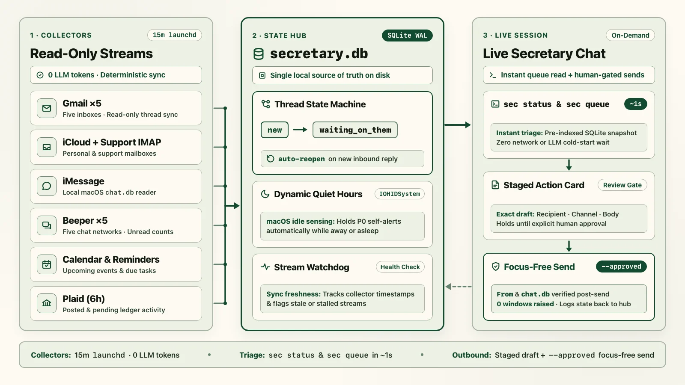

Important messages and deadlines in my life land across 16 separate feeds: five Gmail accounts, iCloud mail and custom-domain support mail, iMessage, five Beeper chat networks (WhatsApp, Facebook Messenger and Marketplace, Reddit, LinkedIn, and Google Voice), Apple and Google Calendar, Apple Reminders, and bank alerts. My first attempt to tame them was a scheduled LLM morning and evening briefing email. Within a week, that briefing became one more unread email I ignored, and any summary written at 7:00 a.m. was already wrong by 9:30 a.m.

What actually stuck was splitting background collection from live reasoning. A plain Python script runs every 15 minutes under launchd, spends zero LLM tokens, and writes normalized threads into a local SQLite database. When I sit down at my desk, I open that workspace in whichever agent has healthy quota (Claude Code, Codex, or Google Antigravity), read the queue in a second, and review outbound drafts before anything leaves my machine.
Why scheduled LLM digests failed, and the two-loop split
Asking an LLM to poll eight APIs while you wait in chat takes two minutes and burns context on raw JSON. Asking an LLM to run on a cron schedule and email you a digest flips the failure mode: you pay tokens every run even when nothing happened, and the output sits static in an inbox while threads keep moving.
Splitting the system into two independent loops fixed both problems on an always-on M5 Max Mac Studio:
- Loop 1 (15-minute deterministic Python sweep, zero LLM tokens):
launchdinvokes./bin/sec sweep. Python connectors read 16 streams across 8 read-only pipes, classify urgency (P0throughP3) with deterministic sender, keyword, and deadline rules, promote approaching calendar events, evaluate physical input idle time for quiet hours, and send a self-iMessage only when an unalertedP0item arrives while I am awake. - Loop 2 (Provider-agnostic Chief-of-Staff chat): The workspace directory holds byte-identical
AGENTS.mdandCLAUDE.mdrule files plus a sharedSecretary Coordinator Status.mdhandoff file. Opening the folder in Claude Code, Codex, or Google Antigravity runs./bin/sec statusand./bin/sec queueagainst local SQLite in roughly one second. Mechanical commands run inline; multi-thread lookups and reply drafting fan out to background subagents so the main chat stays free.
./bin/sec sweep)8 read-only pipes (16 streams) · SQLite WAL ledger · 0 LLM tokensLive coordinator chat
sec status and sec queue in ~1s; runs approved 1-step sends inlineStays instant for conversation
Background draft workers
sec draftNever calls sec send
Every ingestion connector is strictly non-destructive so a background sweep never clears an unread dot in Mail, Gmail, Messages, or Beeper before I have actually looked at it:
| Pipe (streams) | How it stays non-destructive | Rate-limit and health rule |
|---|---|---|
| Gmail OAuth (5) | Calls threads().get(..., format="metadata"); never mutates UNREAD or labels. | 30-day thread window; flags OFFLINE on expired OAuth refresh token. |
| iCloud + Support IMAP (2) | Opens mailbox with select("INBOX", readonly=True) and fetches via BODY.PEEK[]. | App password read in-memory from macOS Keychain; splits personal vs. support alias. |
| Apple Messages (1) | Opens ~/Library/Messages/ via SQLite URI ?mode=ro; decodes attributedBody blobs. | Auto-falls back to signed imcp-server JSON-RPC under launchd; expires 2FA codes >60m. |
| Beeper SQLite (5) | Reads local index.db and account.db with ?mode=ro across WhatsApp, Messenger, Reddit, LinkedIn, and Voice. | Inspects bridge_account_ every sweep to catch silent upstream bridge logouts. |
| Calendars (1) | Queries Google Calendar API and local EventKit events over a -30d to +60d horizon. | Past events log as resolved; meetings starting within 45 minutes escalate to P0. |
| Apple Reminders (1) | Reads JSON snapshot exported by a signed background EventKit bundle; syncs completions back on request. | Flags DEGRADED if status.json is older than 45 minutes; refuses empty [] exports. |
| Bank / Plaid MCP (1) | Calls read-only list_accounts and list_transactions; routine spend inserts as resolved. | 6-hour Plaid throttle (never calls get_balance in loops); surfaces charges >=$250 or fee/fraud alerts. |
| Stream Watchdog (all 16) | Inspects stream_health rows written by the 7 pipes above at the end of every sweep. | Upserts a P0 stream_alert_ item on DEGRADED/OFFLINE and auto-resolves on recovery. |
Copyable prompts: workspace rules and background drafter
Because the state lives in SQLite and a small CLI (./bin/sec), the prompt layer stays compact. Dropping the file below into ~/Developer/secretary/AGENTS.md and copying it to CLAUDE.md gives Claude Code, Codex, and Antigravity the exact same startup routine, priority rubric, delegation rules, and outbound approval gate:
# Secretary: Chief-of-Staff Workspace Rules
This workspace operates identically across Claude Code, Codex, and Antigravity.
Working directory: ~/Developer/secretary
## 1. Conversation Start Protocol
Whenever a session opens this workspace:
1. Read `Secretary Coordinator Status.md` for recent handoffs and open context.
2. Run `./bin/sec status` to check health across all 16 streams, queue counts, and quiet hours.
3. Run `./bin/sec queue` to inspect active P0 and P1 items.
4. Keep the coordinator chat fast and non-blocking:
- Instant 1-command actions (<3s): Run `./bin/sec status`, `./bin/sec queue`, `./bin/sec update`, and `./bin/sec send <id> --approved` directly inline. Never spawn a reasoning subagent for a mechanical 1-step command.
- Single-thread lookups and quick reply drafts: Delegate to a fast lightweight subagent (`flash`) so the main turn stays available.
- Multi-thread audits, scheduling conflicts, or complex planning: Delegate to a high-effort worker (`high`), share a clickable worker link immediately, and relay results when it finishes.
## 2. Single Source of Truth (`secretary.db`)
All state lives in SQLite and is managed through `./bin/sec`:
- `new` / `surfaced`: Active queue items needing review or action.
- `waiting_on_them`: Approved reply sent; tracks `waiting_followup_at` so unanswered threads resurface automatically.
- `snoozed`: Deferred until `snooze_until` (`./bin/sec update <id> --status snoozed --snooze-until "2026-11-12T09:00:00-08:00"`).
- `resolved`: Completed or dismissed (`./bin/sec update <id> --status resolved --resolution-reason handled`).
## 3. Priority Rubric (`P0` to `P3`)
- `P0` (Immediate interrupt): Time-critical bookings, legal or tax deadlines, meetings starting within 45 minutes, bank fraud alerts, or `OFFLINE`/`DEGRADED` stream watchdog alerts.
- `P1` (Today queue, 2 to 4 hours): Customer support emails (`support@example.com`), recruiter or client threads, bills due within 48 hours, and personal messages needing an answer today.
- `P2` (Routine open loops, 24 to 48 hours): General correspondence, package and return windows, and `waiting_on_them` follow-ups.
- `P3` (Passive history): Receipts, newsletters, routine bank transactions, and expired 2FA codes.
## 4. Strict Outbound Exact-Draft Approval Rule
NEVER send an email, text, or chat message to another person without showing the complete exact draft in chat and receiving explicit approval for that version.
- Reply from the exact address or alias that received the message (for example, reply to support inquiries from `support@example.com`, never from `personal@gmail.com`).
- Write short, plain human prose: no em dashes, no stock openings ("I hope this finds you well", "just circling back"), and no corporate filler.
- Format every proposed outbound message as an Action Card:
### Action Card: [Short Descriptive Title]
- **Item:** `#42` · **Stream:** `support_mail` (`support@example.com`) · **Urgency:** `P1`
- **Context:** Plain-English summary of what they asked, relevant history, and recommended next step.
- **Proposed Outbound Draft:**
- **Channel:** `icloud_mail` / `gmail` / `imessage` / `beeper`
- **From:** `support@example.com`
- **To:** `Jordan Lee <jordan@example.com>`
- **Subject:** `Re: License transfer question`
- **Body:**
Hi Jordan,
I reset the activation count on your key so you can sign in on your new Mac right away. Let me know if it gives you any trouble.
Best,
Daniel
- **Status:** Awaiting explicit approval before running `./bin/sec send 42 --approved --followup-days 4`.When the queue has three or four threads that need context pulled from older emails or calendar slots, the coordinator stays responsive by handing those item IDs to a read-only drafter subagent with this bounded prompt:
Role: Secretary Triage & Draft Worker (Read-Only + Draft Save Only)
Workspace: ~/Developer/secretary
Task: Investigate queue items {{ITEM_IDS}} and attach ready-to-review reply drafts.
1. Inspect each item and its thread history via `./bin/sec queue --json` and `./bin/sec history --search "<sender_or_topic>" --json`.
2. Check calendar availability (`calendar_sync` items over the next 14 days) before proposing any meeting times.
3. Verify the exact incoming recipient address or chat handle so `From` matches the alias that received the thread.
4. Save each candidate reply into `secretary.db` using:
`./bin/sec draft <id> --channel <gmail|icloud_mail|imessage|beeper> --from "<exact_sender>" --to "<recipient>" --subject "<subject>" --body "<plain_text_body>"`
5. Hard boundary: NEVER call `./bin/sec send`, AppleScript, SMTP, or MCP send tools. Return concise Action Cards for the coordinator to show in chat.The SQLite WAL ledger and thread state machine
An append-only inbox table breaks down as soon as you answer a text from your phone while away from your desk. If the desktop queue does not notice your outbound reply on the next sweep, it keeps asking you to answer a message you already handled. The reverse happens too: you mark a thread resolved, the other person replies four days later with a follow-up question, and a static status check buries the new message.
- Ingest and deduplicate (
new)Each connector normalizes timestamps to Pacific Time and upserts onUNIQUE(source, source_account, external_id). - Detect phone or desktop replies (
waiting_on_them)When an outbound message from one of my accounts oris_from_me = 1lands in the samethread_id, open inbound siblings automatically move towaiting_on_themwith a 4-day follow-up timer. - Escalate approaching deadlines (
snoozed→P1/P0)Every sweep unsnoozes expired items, promotes overdue follow-ups back into the active queue, and bumps meetings within 45 minutes toP0. - Reopen on new inbound reply (
reopened_by_inbound)If an external sender replies to aresolved,snoozed, orwaiting_on_themthread,upsert_item()flips the thread back tonewand logs the transition initem_events.
Enabling SQLite WAL mode with a 5,000 ms busy_timeout lets the background 15-minute sweep write new rows at the exact same moment an interactive chat session reads the queue, without lock errors. Here is the core ledger schema and thread state machine from secretary/db.py:
import json
import sqlite3
from contextlib import contextmanager
from datetime import datetime, timedelta
from pathlib import Path
from zoneinfo import ZoneInfo
PT = ZoneInfo("America/Los_Angeles")
def now_pt_iso() -> str:
return datetime.now(PT).isoformat(timespec="seconds")
class SecretaryDB:
def __init__(self, db_path: Path = Path("~/Developer/secretary/secretary.db").expanduser()) -> None:
self.db_path = db_path
self.init_schema()
@contextmanager
def get_connection(self):
self.db_path.parent.mkdir(parents=True, exist_ok=True)
conn = sqlite3.connect(str(self.db_path), timeout=10.0)
conn.row_factory = sqlite3.Row
conn.execute("PRAGMA journal_mode=WAL;")
conn.execute("PRAGMA busy_timeout=5000;")
conn.execute("PRAGMA foreign_keys=ON;")
try:
yield conn
conn.commit()
except Exception:
conn.rollback()
raise
finally:
conn.close()
def init_schema(self) -> None:
with self.get_connection() as conn:
conn.executescript("""
CREATE TABLE IF NOT EXISTS items (
id INTEGER PRIMARY KEY AUTOINCREMENT,
source TEXT NOT NULL,
source_account TEXT NOT NULL,
external_id TEXT NOT NULL,
thread_id TEXT,
direction TEXT DEFAULT 'inbound',
sender_name TEXT,
sender_handle TEXT,
title TEXT NOT NULL,
summary TEXT,
body_snippet TEXT,
occurred_at TEXT,
due_at TEXT,
priority TEXT NOT NULL,
category TEXT,
status TEXT NOT NULL,
resolution_reason TEXT,
snooze_until TEXT,
waiting_followup_at TEXT,
p0_alerted_at TEXT,
draft_channel TEXT,
draft_from TEXT,
draft_to TEXT,
draft_cc TEXT,
draft_subject TEXT,
draft_body TEXT,
metadata_json TEXT,
created_at TEXT NOT NULL,
updated_at TEXT NOT NULL,
UNIQUE(source, source_account, external_id)
);
CREATE INDEX IF NOT EXISTS idx_items_queue ON items(priority, status, due_at);
CREATE INDEX IF NOT EXISTS idx_items_thread ON items(source, source_account, thread_id);
CREATE INDEX IF NOT EXISTS idx_items_p0_alert ON items(priority, p0_alerted_at);
CREATE TABLE IF NOT EXISTS item_events (
id INTEGER PRIMARY KEY AUTOINCREMENT,
item_id INTEGER NOT NULL REFERENCES items(id) ON DELETE CASCADE,
event_type TEXT NOT NULL,
old_status TEXT,
new_status TEXT,
note TEXT,
created_at TEXT NOT NULL
);
CREATE TABLE IF NOT EXISTS stream_health (
stream_name TEXT PRIMARY KEY,
status TEXT NOT NULL,
last_sync_at TEXT,
last_ok_at TEXT,
consecutive_failures INTEGER DEFAULT 0,
last_error TEXT,
details_json TEXT
);
""")
def get_item(self, item_id: int) -> dict | None:
with self.get_connection() as conn:
row = conn.execute("SELECT * FROM items WHERE id = ?", (item_id,)).fetchone()
return dict(row) if row else None
def upsert_item(self, item: dict, followup_days: int = 4) -> int:
now = now_pt_iso()
direction = item.get("direction", "inbound")
status = item.get("status", "new")
thread_id = item.get("thread_id")
with self.get_connection() as conn:
existing = conn.execute(
"SELECT id, status, resolution_reason FROM items "
"WHERE source = ? AND source_account = ? AND external_id = ?",
(item["source"], item["source_account"], item["external_id"]),
).fetchone()
if existing:
new_status = "resolved" if status == "resolved" else existing["status"]
conn.execute(
"UPDATE items SET title = ?, summary = COALESCE(?, summary), "
"priority = COALESCE(?, priority), status = ?, updated_at = ? WHERE id = ?",
(item["title"], item.get("summary"), item.get("priority"), new_status, now, existing["id"]),
)
return int(existing["id"])
if thread_id:
siblings = conn.execute(
"SELECT id, status FROM items WHERE source = ? AND source_account = ? AND thread_id = ?",
(item["source"], item["source_account"], thread_id),
).fetchall()
if direction == "inbound":
# A fresh reply arrived on a snoozed, waiting, or resolved thread: reopen it.
for sib in siblings:
if sib["status"] in ("waiting_on_them", "resolved", "snoozed"):
conn.execute(
"UPDATE items SET status = 'new', resolution_reason = NULL, updated_at = ? WHERE id = ?",
(now, sib["id"]),
)
conn.execute(
"INSERT INTO item_events (item_id, event_type, old_status, new_status, note, created_at) "
"VALUES (?, 'reopened_by_inbound', ?, 'new', 'New inbound reply in thread', ?)",
(sib["id"], sib["status"], now),
)
elif direction == "outbound":
# I replied from my phone or mail app: move open thread items to waiting_on_them.
followup_at = (datetime.now(PT) + timedelta(days=followup_days)).isoformat(timespec="seconds")
for sib in siblings:
if sib["status"] in ("new", "surfaced"):
conn.execute(
"UPDATE items SET status = 'waiting_on_them', resolution_reason = 'replied_in_thread', "
"waiting_followup_at = ?, updated_at = ? WHERE id = ?",
(followup_at, now, sib["id"]),
)
conn.execute(
"INSERT INTO item_events (item_id, event_type, old_status, new_status, note, created_at) "
"VALUES (?, 'outbound_replied', ?, 'waiting_on_them', 'Outbound reply detected', ?)",
(sib["id"], sib["status"], now),
)
if status == "new":
status = "resolved"
cur = conn.execute(
"INSERT INTO items (source, source_account, external_id, thread_id, direction, "
"sender_name, sender_handle, title, summary, occurred_at, due_at, priority, "
"category, status, metadata_json, created_at, updated_at) "
"VALUES (?, ?, ?, ?, ?, ?, ?, ?, ?, ?, ?, ?, ?, ?, ?, ?, ?)",
(
item["source"], item["source_account"], item["external_id"], thread_id, direction,
item.get("sender_name"), item.get("sender_handle"), item["title"], item.get("summary"),
item.get("occurred_at", now), item.get("due_at"), item.get("priority", "P1"),
item.get("category", "general"), status, json.dumps(item.get("metadata") or {}), now, now,
),
)
return int(cur.lastrowid)Movie-proof dynamic quiet hours
Hardcoded quiet hours never quite match real life. If I am debugging something at 12:30 a.m., I want urgent alerts to come through; if I fall asleep at 10:30 p.m. with a movie still playing, I do not want my phone buzzing at midnight. Checking macOS power assertions (pmset -g assertions) fails that second test because video and audio playback hold PreventUserIdleDisplaySleep and Playing audio locks long after you fall asleep.
Instead, quiet_hours.py reads HIDIdleTime from ioreg -c IOHIDSystem, which measures nanoseconds since the last physical keyboard, mouse, or trackpad touch and ignores passive media playback completely. To check my M4 MacBook Air alongside the Mac Studio without waking a closed-lid laptop over Wake-on-LAN, it probes TCP port 22 with a 1.2-second socket timeout first and only runs SSH if the laptop is already awake. In cli.py, any P0 item ingested while is_quiet is true stays in secretary.db with p0_alerted_at IS NULL; the first sweep after morning keyboard or trackpad input (<10m idle after 06:00 PT, or 08:30 PT unconditionally) flips is_quiet to False and dispatches the held self-alert right away:
import re
import socket
import subprocess
from datetime import datetime
from zoneinfo import ZoneInfo
PT = ZoneInfo("America/Los_Angeles")
LAPTOP_HOST = "laptop.local"
def get_local_hid_idle_sec() -> float | None:
"""Seconds since physical keyboard/mouse/trackpad input (ignores video playback)."""
proc = subprocess.run(["ioreg", "-c", "IOHIDSystem"], capture_output=True, text=True, timeout=2.5, check=False)
match = re.search(r'"HIDIdleTime"\s*=\s*(\d+)', proc.stdout) if proc.returncode == 0 else None
return int(match.group(1)) / 1_000_000_000.0 if match else None
def get_remote_laptop_hid_idle_sec(host: str = LAPTOP_HOST) -> float | None:
"""Non-waking check: 1.2s TCP port-22 probe first so a sleeping MacBook stays asleep."""
try:
with socket.create_connection((host, 22), timeout=1.2):
pass
except OSError:
return None
proc = subprocess.run(
["ssh", "-o", "BatchMode=yes", "-o", "ConnectTimeout=2", host,
"ioreg -c IOHIDSystem | awk '/HIDIdleTime/ {print int($NF/1000000000); exit}'"],
capture_output=True, text=True, timeout=3.0, check=False,
)
return float(proc.stdout.strip()) if proc.returncode == 0 and proc.stdout.strip() else None
def is_quiet_hours(now: datetime | None = None) -> tuple[bool, str]:
now_pt = (now or datetime.now(PT)).astimezone(PT)
cur_min = now_pt.hour * 60 + now_pt.minute
if 8 * 60 + 30 <= cur_min < 21 * 60 + 30:
return False, "daytime (08:30-21:30 PT)"
idles = [x for x in (get_local_hid_idle_sec(), get_remote_laptop_hid_idle_sec()) if x is not None]
effective_idle = min(idles) if idles else None
if 21 * 60 + 30 <= cur_min < 22 * 60:
return (effective_idle is not None and effective_idle >= 45 * 60), "evening wind-down (>=45m HID idle)"
if cur_min >= 22 * 60 or cur_min < 6 * 60:
# Movie-safe: 35+ minutes without physical input engages quiet hours even if video is playing.
return (effective_idle is None or effective_idle >= 35 * 60), "night (>=35m HID idle)"
# 06:00 to 08:30 PT: stay quiet until physical input within the last 10 minutes wakes the session.
return not (effective_idle is not None and effective_idle < 10 * 60), "early morning wake check (<10m HID idle)"Code-enforced approval gates and focus-preserving sends
Putting "never send an email without asking me" in a system prompt works 99 times and fails on the 100th when a long session compresses context or misreads a shorthand reply. If an agent has access to outbound mail and messaging, the hard boundaries belong in deterministic Python code, not prompt prose:
- CLI approval gate:
sec send <id>raises aValueErrorunless--approvedis explicitly passed and the row insecretary.dbalready has non-emptydraft_channel,draft_to, anddraft_bodyfields. Drafter subagents only getsec draft. - Hardcoded self-alert allowlist: Automated
P0texts pass throughverify_recipient_allowed(), which checks a constant phone and email allowlist (falling back to a privatehttps://ntfy.sh/your-private-topic-tokenwebhook ifMessages.apperrors) and raisesRuntimeErroron any external recipient. - Zero-focus AppleScript +
chat.dbreceipt check: Any AppleScript that callsactivateyanks window and keyboard focus away mid-sentence.send_imessage()talks to the backgroundMessagesdaemon withoutactivate, then pollschat.dbin read-only mode to confirm the newis_from_me = 1row settled withis_sent = 1anderror = 0. - Post-send
Fromheader verification: Earlier in the fall, a support reply accidentally went out from my personal Gmail address instead of my support alias. Nowsend_gmail()reads back the sent message's metadata headers immediately aftermessages().send()and raises a loud error if the actualFromheader does not matchdraft_from.
import base64
import json
import re
import sqlite3
import subprocess
import time
from email.mime.text import MIMEText
from email.utils import formatdate, make_msgid
from pathlib import Path
ALLOWED_SELF_PHONE = "+15550100"
ALLOWED_SELF_EMAIL = "personal@gmail.com"
def verify_recipient_allowed(recipient: str) -> None:
cleaned = re.sub(r"[\s\-\(\)]", "", recipient)
if cleaned in (ALLOWED_SELF_PHONE, ALLOWED_SELF_PHONE.lstrip("+")) or recipient.strip().lower() == ALLOWED_SELF_EMAIL:
return
raise RuntimeError(f"Blocked automated alert to non-allowlisted recipient: {recipient!r}")
def send_imessage_background(to_handle: str, body: str, chat_db: Path) -> dict:
"""Dispatch via Messages daemon IPC without 'activate' (never steals window focus)."""
conn = sqlite3.connect(f"file:{chat_db}?mode=ro", uri=True, timeout=1.0)
min_rowid = conn.execute("SELECT COALESCE(MAX(ROWID), 0) FROM message").fetchone()[0]
conn.close()
script = f'''
tell application "Messages"
set targetAccount to 1st account whose service type = iMessage
set targetParticipant to participant "{to_handle.strip()}" of targetAccount
send {json.dumps(body)} to targetParticipant
return "SUCCESS"
end tell
'''
proc = subprocess.run(["osascript", "-e", script], capture_output=True, text=True, timeout=8.0, check=False)
if proc.returncode != 0 or "SUCCESS" not in proc.stdout:
raise RuntimeError(f"Messages IPC failed: {proc.stdout or proc.stderr}")
# Poll chat.db in read-only mode until the new row settles with is_sent=1 and error=0.
deadline = time.time() + 3.0
digits = re.sub(r"\D", "", to_handle)
phone_tail = digits[-10:] if "@" not in to_handle and len(digits) >= 7 else ""
snippet = body[:40].strip()
while time.time() <= deadline:
conn = sqlite3.connect(f"file:{chat_db}?mode=ro", uri=True, timeout=1.0)
rows = conn.execute(
"SELECT m.ROWID, m.text, m.is_sent, m.error, h.id FROM message m "
"LEFT JOIN handle h ON m.handle_id = h.ROWID "
"WHERE m.is_from_me = 1 AND m.ROWID > ? ORDER BY m.ROWID DESC LIMIT 5",
(min_rowid,),
).fetchall()
conn.close()
for row_id, text, is_sent, error, h_id in rows:
h_str = (h_id or "").strip()
handle_match = bool(h_str) and (
(phone_tail and phone_tail in re.sub(r"\D", "", h_str))
or h_str.lower() == to_handle.strip().lower()
)
if handle_match or (snippet and text and snippet in text):
if error != 0:
raise RuntimeError(f"Messages delivery error {error} on ROWID {row_id}")
if is_sent == 1:
return {"verified": True, "row_id": row_id, "is_sent": is_sent, "error": error, "handle": h_id}
break
time.sleep(0.3)
return {"verified": False}
def send_gmail(service, from_addr: str, to_addr: str, subject: str, body: str, thread_id: str | None = None) -> dict:
msg = MIMEText(body, "plain", "utf-8")
msg["From"], msg["To"], msg["Subject"] = from_addr, to_addr, subject
msg["Date"] = formatdate(localtime=True)
msg["Message-ID"] = make_msgid(domain=from_addr.split("@")[-1])
payload = {"raw": base64.urlsafe_b64encode(msg.as_bytes()).decode("utf-8")}
if thread_id:
payload["threadId"] = thread_id
sent = service.users().messages().send(userId="me", body=payload).execute()
# Read back the sent message's headers to verify the exact sender alias was used.
meta = service.users().messages().get(
userId="me", id=sent["id"], format="metadata", metadataHeaders=["From"]
).execute()
headers = {h["name"].lower(): h["value"] for h in meta.get("payload", {}).get("headers", [])}
actual_from = headers.get("from", "")
if from_addr.strip().lower() not in actual_from.lower():
raise RuntimeError(f"From-header mismatch: expected {from_addr}, sent as {actual_from}")
return {"message_id": sent["id"], "verified_from": actual_from}
def send_approved_item(db, item_id: int, *, approved: bool = False) -> dict:
if not approved:
raise ValueError("Refusing to send: explicit --approved flag is required.")
item = db.get_item(item_id)
if not item or not item["draft_channel"] or not item["draft_to"] or not item["draft_body"]:
raise ValueError(f"Item #{item_id} is missing a complete saved draft.")
# Dispatch to send_gmail, send_imap_smtp, send_imessage_background, or send_beeper...
return {"item_id": item_id, "channel": item["draft_channel"], "to": item["draft_to"]}The launchd wrapper and four macOS traps
Everything worked on the first try from an interactive terminal and then broke four different ways the moment I moved it under a 15-minute launchd plist. macOS does not ship Linux's flock(1) binary either, so bin/run-sweep.sh uses a one-line Perl Fcntl non-blocking lock alongside a 5 MB log rotator so a slow network call can never pile up overlapping sweeps:
#!/bin/bash
set -euo pipefail
export PATH="/opt/homebrew/bin:/usr/local/bin:/usr/bin:/bin:$HOME/.local/bin:${PATH:-}"
export TZ="America/Los_Angeles"
export PYTHONUNBUFFERED=1
DIR="$(cd "$(dirname "${BASH_SOURCE[0]}")/.." && pwd)"
LOG_FILE="${DIR}/logs/sweep.log"
LOCK_FILE="/tmp/secretary-sweep.lock"
mkdir -p "${DIR}/logs"
# Keep sweep.log bounded at 5 MB (last 5,000 lines).
if [ -f "${LOG_FILE}" ] && [ "$(stat -f%z "${LOG_FILE}" 2>/dev/null || echo 0)" -gt 5242880 ]; then
tail -n 5000 "${LOG_FILE}" > "${LOG_FILE}.tmp.$$" && mv "${LOG_FILE}.tmp.$$" "${LOG_FILE}"
fi
# Non-blocking flock via macOS system Perl so overlapping 15m sweeps exit cleanly.
exec 200>"${LOCK_FILE}"
if ! perl -e 'use Fcntl qw(:flock); open(my $fh, ">&=", 200) or exit 1; exit(flock($fh, LOCK_EX | LOCK_NB) ? 0 : 1)' 2>/dev/null; then
exit 0
fi
cd "${DIR}"
"${DIR}/bin/sec" sweep >> "${LOG_FILE}" 2>&1If you wire up a similar local sweep on macOS, expect to hit these four walls:
~/Documentstriggers TCCOperation not permittedunderlaunchd. My first checkout lived in~/Documents/secretary. An interactive shell inherits your terminal app's TCC grant forDocuments, so manual runs succeeded whilelaunchdfailed before Python even started. Moving the repository and SQLite ledger to~/Developer/secretary(outside TCC's protected folder list) and leaving a symlink at~/Documents/secretaryfixedlaunchdwithout breaking existing workspace paths./bin/bashlacks Full Disk Access for~/Library/Messages/chat.db, and Ventura+ hides message text inattributedBody. On modern macOS, outgoing and rich iMessages frequently leavemessage.textasNULLand store the string insidemessage.attributedBodyas an AppletypedstreamNSAttributedStringblob, which takes a short byte-slice parser after theNSStringmarker to extract cleanly. Even with that parser,launchdjobs spawned under/bin/bashget denied when openingchat.dbdirectly.messages_stream.pytries the fast read-only SQLite query first (for interactive CLI runs) and automatically falls back over stdio JSON-RPC to a signed helper app bundle (/Applications/iMCP.app/Contents/MacOS/imcp-server) whose bundle identifier holds its own TCC grant.- EventKit and
reminders-clisilently return[]underlaunchd. Unlikechat.db, which fails loudly with a permission error, querying EventKit for Apple Reminders from an unbundled binary underlaunchdcan exit0and return an empty JSON array[]. If your sync script trusts that empty array, it marks every open reminder resolved. Wrapping the exporter inside an ad-hoc-signedLSBackgroundOnly.appbundle withNSRemindersUsageDescriptioninInfo.plist, refusing empty exports when reminders exist, and marking the streamDEGRADEDwheneverstatus.jsonis older than 45 minutes stopped silent wipes cold. - Silent upstream Beeper bridge disconnects and plaintext MCP credentials. Matrix bridges in Beeper occasionally lose an upstream WhatsApp or Facebook token while the local
index.dbkeeps returning cached rooms with zero SQLite errors. Readingbridge_account_statesfromaccount.dbon every sweep catches any bridge whose state leavesCONNECTEDorRUNNINGand raises aP0watchdog alert immediately. And rather than storing iCloud or custom-domain IMAP passwords in plaintext MCP JSON config files,imap_stream.pypulls credentials into memory at runtime viasecurity find-generic-password -s icloud-mail -a you@icloud.com -wso zero secrets sit on disk.
What this intentionally does not do
A few deliberate limits keep this setup predictable day to day:
- Rule-based Python triage instead of LLM classification on every sweep. Because the 15-minute job uses sender lists, domain rules, and deadline math rather than an LLM call, an unusual email from a brand-new sender occasionally lands in
P2instead ofP1until I add a rule. In trade, 96 daily sweeps cost $0, finish in a few seconds, and never send private legal, financial, or medical messages to a cloud model unprompted. - No autonomous replies to people. Background jobs can write to local SQLite and text my own phone number, nothing else. Every message to another human stops at an Action Card until I read the exact body and pass
--approved. - Unread badges stay unread until I act. Because IMAP uses
BODY.PEEK[], Gmail uses metadata fetches, and SQLite connectors use?mode=ro, dismissing an item insecretary.dbdoes not mark the email read in Apple Mail on my phone. I prefer that to a background script prematurely clearing unread dots before I have seen a thread. - macOS-specific edges around a portable core.
IOHIDSystemidle checks,Messages.appAppleScript IPC, and signed EventKit bundles require an always-on Mac, though the SQLiteWALledger, thread state machine, Gmail OAuth connector, and Keychain-free IMAP pipe run unchanged on Linux.
After living with this for daily triage, the biggest surprise was how little AI the background half needed. Once deterministic Python kept one honest ledger of what arrived, what I already answered from my phone, and which pipes were healthy, any good coding model could step in as Chief of Staff in a second.